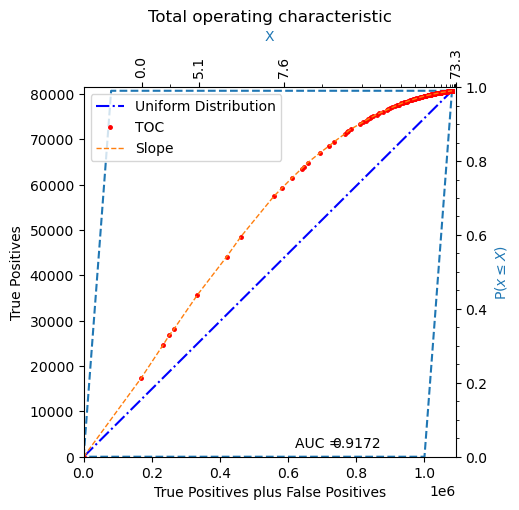
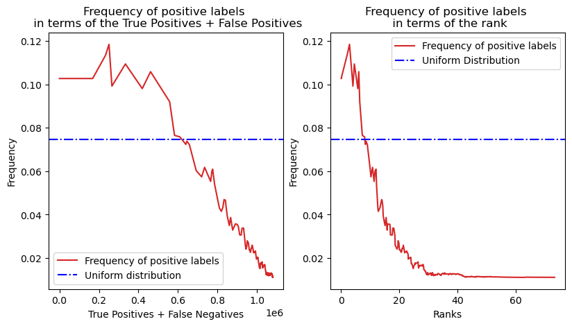
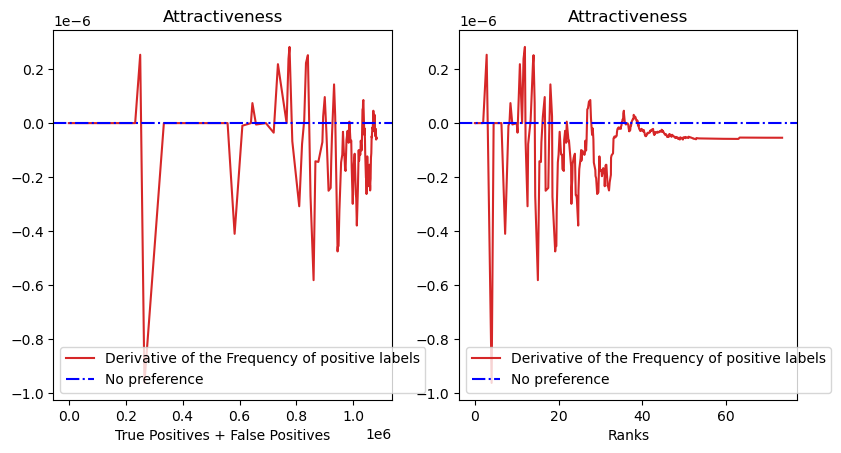
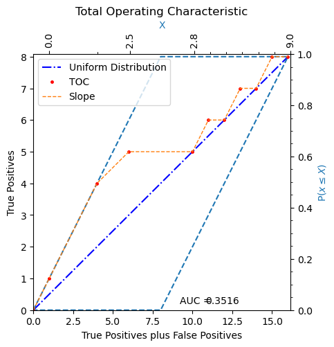

Welcome to TOC+ documentation!¶
TOC+ is an extended version of the original TOC proposed by R. G. Ponitius. This tool is more informative. It is a numerically reliable tool to describe a binary classifier performance, data exploration and discover intricated probability statistical characteristics of any variable that is considered as a classifier.
TOC+ Extends the Original TOC curve presenting the cumulative distribution function in compact manner. TOC+ is constructed in seconds [1] with all data and shows the sparsity of the rank domain.
One of the most important innovations in this software is the implementation of findings regarding the direct relation with the Probability Density functions.
First Derivative of the TOC. The Histogram of frequencies¶
The histogram of frequencies are plotted from the toc with:
tocplus.plotHistograms()
By analyzing the first derivative of the TOC, we can elucidate the underlying Distribution Function for any classifier. The figure below shows the approximation to the first derivative of the main plot in the original rank and True Positive/False Negative domain.
This graph clearly illustrates for which rank values the classifier performs better than a random uniform classifier. The farther the blue line or point is from the red dotted line, the less random and more accurate the classifier is in correctly identifying data rank values.
Output Example.
Second Derivative of the TOC, the attractiveness analysis¶
The Second derivative of the TOC. The Attractiveness analysis.
The Attractiveness analysis measures how the strength of attraction changes as we explore a rank value within its neighborhood. If the second derivative of the TOC, evaluated at any given rank, is greater than zero, it means that the variable reinforces attractiveness when we increase that value in its neighborhood. Conversely, if the second derivative is less than zero, the behavior is repelling.
The Second derivative for the attractiveness analysis of the variable is computed with:
The histogram of frequencies are plotted from the toc with:
tocplus.plotAttractiveness()
Output Example.
TOC+ Quick Start¶
Once TOC is installed.
Step 1. Import the tocp module:
import tocplus as tocp
Step 2. Read or generate data:
X = np.array([0,1,1,1,2,2,3,3,3,3,4,5,6,7,8,9])
Y = np.array([1,1,1,1,0,1,0,0,0,0,1,0,1,0,1,0])
Step 3. Generate the TOC+ plot:
T1 = tocp.TOC(rank = X, groundtruth = Y)
T1.plot(filename='')
Output:
Textual description:
The bottom axis tick labels represent the dataset size, indicating that we have 16 elements in this case.
The upper axis tick labels show that the dataset ranges from 0 to 9 and illustrate the density of ranks within each interval. The greater the geometric separation between two consecutive ticks, the more ranks are contained within that interval.
The left vertical axis represents the number of true positives in relation to the number of true positives and false negatives at the selected threshold, marked by one orange point.
The 10 orange points correspond to the number of different ranks.
The blue dotted line serves as a reference model for a uniform distribution, describing the total number of positive data elements with no specific preference for any rank value.
Regarding the Parallelogram Shape:
The parallelogram denotes the feasible TOC space.
The proportion of the parallelogram’s base relative to the square’s length indicates the balance or imbalance of the dataset. In this case, the parallelogram’s base is more than half the length of the square’s base, suggesting a slight imbalance with more negative-labeled data than positive-labeled data.
Footnotes
Main Software Documentation¶
- class src.tocplus.TOC(rank=array([], dtype=float64), groundtruth=array([], dtype=float64), sortw=1.0)¶
This class implements the Total Operating Characteristic Curve. The TOC computed from a rankl and groundtruth using this instantiation is named standard TOC trought the document.
- Parameters:
rank – The class is instantiated with the optional parameter
rankthat is a numpy array of a predicting feature.groundtruth – The class is instantiated with the optional parameter
groundtruththat is a numpy array of binary labels (0,1).sortw – 1 by default, the data is sorted using the formula: 1e9*rank+sortw*groundtruth, that means that data with the highest class value is sorted first.
- Variables:
kind – A string with the value ‘None’ by default, it indicates the kind of TOC, for instance: TOC, normalized, vector, density and qspline. The
kindattibute is mainly used for plotting inside the class.- Returns:
The class instance, if
rankandgrountruthare given it computes the TOC, and thekindis TOC, otherwise it is an empty class. Some methods of the TOC class return the other kinds of TOC, suich as density, noprmalize, etc.- Return type:
TOC
- PDataProp = 0¶
Proportion of positive data in the data. The purpose is to maintain the proportion of class 1 data, hence to preserve the knowlkedege about data imbalance and proportion of calsses even if the TOC is normalized.
- TOCdiff(T2)¶
This method computes the difference between the self TOC (the TOC which the method is called from) and the T2 TOC (self-T2). Possibly the best usage with two normlized TOCs, nevertheless the method does not validate such a case. The TOC with the lowest number of data is resampled, to get to TOC with the same number.
- Parameters:
T2 – the second TOC that is substracted from the TOC the method is called from (self-T2).
- Variables:
kind – ‘Diff’, the resulting TOC is kind ‘Diff’.
ndata – The number of data in the resulting curve is the greater of the two input TOCs.
- Returns:
Returns the a new curve with the difference., new memory is allocated.
- Return type:
TOC
- TP = None¶
A numpy array with the sum of true positives
- TPplusFP = None¶
A numpy array with the sum of true positives plus false positives.
- area = 0¶
Area under the curve of the TOC.
- areaComputation()¶
This method computes the area under the curve of the TOC and parallelogram and the proportional ratio :return: Returns the TOC’s area under the curve :rtype:
float
- areaRatio = 0¶
areaRatio with respect to the parallelogram. If the maximum TOC area is that of the parallelogram, hence this is the ratio of the TOC area inside the parallelogram divided by the parallelogram arena. Notice that the area inside the parallelogram is usually different from the area under the curve, it is computed substracting from the
areathe triangle in the left side of the parallelogram.
- basenpos = 0¶
basenpos preserve the npos value from the standard TOC when it is normalized. Nevertheless it is modified by resample.
- basentppfp = 0¶
Some TOCs result from applying operations to an standard TOC, in such a case the ntppfp could change int the resulting TOC nevertheless the basentppfp is copied from the standard TOC. For instance, ntppfp is 1 in the normalized TOC, but the basetppfp preserves the value from the standard TOC.
- density(smoothing=-1, order=1, verbose=0)¶
This function computes an approximation of the derivative of the TOC curve using cubic and fifth order centered finite differences. That is to say, if the
orderparameter is set to 1, it computes an approximation using a the finite difference before and after the current point, hence this approximation provides a cubic error term. Additionally, the function computes a smooth version of the derivative using a mean filter. The original TP and TPplusFP arrays from the input TOC (the TOC which this function is called from) are copied. .. warning:: It is strongly suggested to use a vector or nvector kind TOC, because the derivative of a standard TOC only produces finite differences with 0 or 1, hence the derivative of a standard TOC is, usually, highly noisy and non-informative. It is strongly suggested to use a vector kind TOC produced from a normalized TOC, or a nvector TOC, because this kind of TOC have a maximum value of 1 in both access, hence, the derivative can be seen as a density probability function. This is intended use of the function.- Parameters:
smoothing – window size param for smoothing the derivative. It is -1 by default, so it is computed inside the function trying to present an informative smooth TOC. Optional
order – 1 by defautl. 1 uses formulae for derivatives with a cubic error term, and 2, produces a 5-powered error term. Optional
- Variables:
df – density/TOC derivative function approximation (numpy array). This variable can be publicly acccesed in this TOC.
smooth – smoothed density/TOC derivative (numpy array). This variable can be publicly acccesed in this TOC..
areaSm – area array of the smoothed density (numpy array). The cummulative area of the density, hence it returns for any position the cummulative area from 0 to the postion.
areaSm – area array of the non-smoothed density (numpy array). The cummulative area of the density, hence it returns for any position the cummulative area from 0 to the postion.
areaError – The area and areaSm are forced to integrate 1, nevertheless the numeric approximation actually do not integrate 1 due to the various approximations that the process uses, This variable stores the actual integral, hence it gives a measure of the error.
areaSmError – Similar to areaError but for the smooth version of the TOC.
FP – an array of false positives, hence it is possible to plot or to analyze the density vs the FP.
- Returns:
A TOC curve of
kind“density”, in contrast with other TOC kinds, it includes the variables mentioned above.- Return type:
TOC
- generateMassFunction_secant(X, Y, h=10000)¶
This function generates an approximation of the Histogram of frequencies from the TOC.
- Parameters:
X – The Hits + True Positives. They are basically an array from the range 0 to len(Y)
Y – The associated Hits to each Hits + true positive values generated at each Threshold
h – The distance between TOC points to calculate the slope of the secant line.
- Returns:
The approximation to the first derivative of the TOC using the secant method that represents the histogram of frequencies in terms of Hits + False Alarms
- Return type:
np.array
- indices = None¶
This attibute stores the indices fo the sorted rank. Storing the indices is useful to save computational time when converting a rank array to a probability value.
- kind = 'None'¶
The
kindattribute indicates the type of TOC curve, that is to say, it is “TOC” kind if the x axes presents the true positives plus false positives count, and the y axes presents the true-positive count. It is a “Vector”” kind if the curve is a representation of the original TOC, that is to say it stores nvector vectorial means of the original TOC data.
- ndata = 0¶
This attribute stores the number of data in the arrays of the class, notice that the number of positives (
npos) or other counts are altered when interpolations, normalization or vectorization of the TOC is applied, whilendatastores the length of the data arrays independent of the mentioned counts.
- normalize()¶
This method scales the axis to the interval [0,1]. The self TOC (the TOC which the method is called from) is normalized, there is not new memory allocation. :return: Returns the modified TOC curve :rtype:
TOCThe
kindTOC curve is ‘normalized’. The true positives plus false positives count is 1, ntppfp=1, and true positives, TP=1. Nevertheless the basentppfp and basenpos stores the values of the self TOC.
- npos = 0¶
Similar to ntpfp, this variable stores the number of positive data (1 valued data), and also it is lost in the normalized TOC ( it is 1 in th enormalized TOC).
- ntppfp = 0¶
This is the count fo true positives plus false positives. Notice that this number could be different from the number of data, for instance, normalized, vector, resampled or density TOCs could have a different ndata and ntppfp value.
- pararea = 0¶
parallelogram area.
- plot(filename='', title='default', TOCname='TOC', kind='None', height=2400, width=2400, dpi=300, xlabel='default', ylabel='default')¶
A generic plot function for all the kind of TOCs. All the parameters are optional. If
filenameis not given it plots to a window, otherwise it is a png file.- Parameters:
filename – Optional. If given it must be a png filename, otherwise the TOC is plotted to a window.
title – Optional, title of the plot.
kind – Optional, a standard TOC can be plotted normalized or in the original axis values.
height – pixels of the height. 1800 by default.
width – pixels of the width. 1800 by default.
dpi – resolution. 300 by default.
xlabel – string.
ylabel – string.
- Returns:
it does not return anything.
- plotAttractiveness()¶
This function plots an approximated version of the second derivative of the TOC. The second derivative of the toc gives information regarding the appealingness of certain value of the rank associated to positive data.
- plotHistograms()¶
This function plots an Histogram of frequencies from the approximated derivative of the TOC.
- rank2prob(rank, kind='Density', indices=None)¶
This function computes probability values associated to a rank value. The
thresholdsarray of the density TOC is used for this purpose. Very possibly the rank is the same than those used to compute a standard TOC instantiated by TOC(rank,groundtruth), hence the indices used in the constructor are available and can save computational time. Otherwise the indices are recomputed. In any case the inputedrankarray must be in the same interval than the thresholds.- Parameters:
rank – A numpy array with the ran. The intended uses is that this rank comes from the standard TOC computation, and to associate this rank with geolocations, hence the probabilities can be associated in the same order.
kind – if
kindis ‘’density’’ the probabilitites are computed with the non-smoothed density function, otherwise the smooth version is used. Notice that a this function only must be called from a ‘’density’’ kind TOC. Optionalindices – Indices of the reversely sorted rank, this array is computed by the standard TOC computation. Hence the computational cost of recomputing them could be avoided, otherwise the indices are recomputed and they are not stored. Optional
return: a numpy array with the probabilities. The probabilities do not sum 1, instead they sum
PDataProp, that is to say they sum the proportion of positives in the data. That is an estimation of the probability of having a 1-class valued datum.- Return type:
numpy array
- resample(T2)¶
This function creates a new TOC curve, the data of the self TOC (the TOC which the method is called from) is interpolated to the number of data, and the true positves plus false positves,
TPplusFPin T2. Considering that the number of true positives plus false positives is modified (usually extended to a greater value)- Parameters:
T2 – the TOC curve with the desired number of data and data values in the TPplusFP axis.
- Returns:
A TOC of the same kind than T2.
- Return type:
- thresholds = None¶
A numpy array with thresholds of the TOC, they are computed using the ranks, that is to say, in the standard TOC most of the ranks are equal to the thresholds.
- tickPositions(sorted_ranks, n=30)¶
This function computes the tick positions of the secondary axes regarding the inherent cummulative distribution of the TOC.
- Parameters:
sorted_ranks – Received ranks sorted in increase order
n – number of ticks
- Returns:
Equispaced ticks, position of the equispaced ticks
- Return type:
np.array
- vector(nmeans=-1)¶
Computes a vector representation of the curve using the mean of sets of points. The points are those in a set of intervals with equal number of points. if
nmeans=30, then the number of points in the original TOC is divided by 30. If nmeans=-1 (default) the number of intervals is automatically computed, the maximum possible are 8000 the minimum are 1000 or n/5 (the lower).- Parameters:
nmeans – The number of intervals. Optional parameter that can be automatically computed. Optional
kind – If the input is a normalized TOC the output is a ‘nvector’, otherwise it is a ‘verctor’ kind.
basenpos,basentppfp (npos, ntppfp,) – The counts are taken from the input TOC.
- Returns:
A TOC instance of the vector representation, new memory is allocated.
- Return type:
TOC
Contents:
TOCTOC.PDataPropTOC.TOCdiff()TOC.TPTOC.TPplusFPTOC.areaTOC.areaComputation()TOC.areaRatioTOC.basenposTOC.basentppfpTOC.density()TOC.generateMassFunction_secant()TOC.indicesTOC.kindTOC.ndataTOC.normalize()TOC.nposTOC.ntppfpTOC.parareaTOC.plot()TOC.plotAttractiveness()TOC.plotHistograms()TOC.rank2prob()TOC.resample()TOC.thresholdsTOC.tickPositions()TOC.vector()
TOCdiff()compute()plot()plotComp()resample()